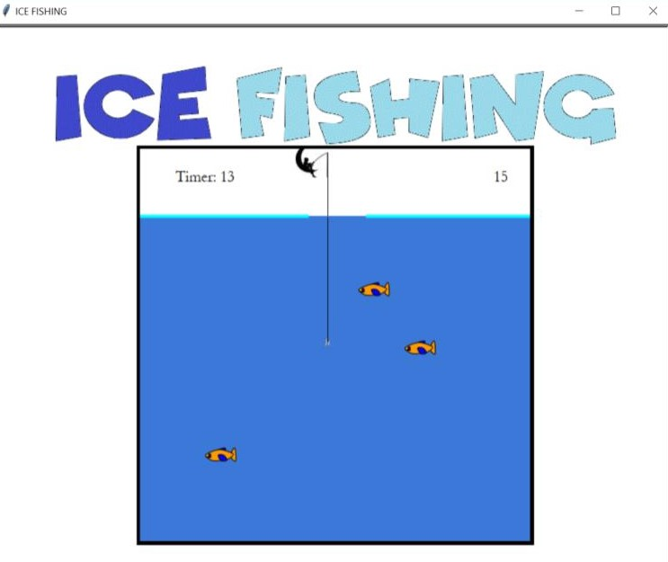

Home
Portfolio
About Me
Portfolio

Our project is Tic Tac Turtle. Instead of X's and O's there are turtles. When you first run the program you are asked to press Enter to start. Next, the program shows a new screen with the Tic Tac Toe board. You will also see columns, X, Y, & Z, and rows A, B, & C. In the console the first player and second player are asked to type in the box or square they want to go to. The program also has a collision system to detect if a player puts their turtle on an occupied square and asks that player to re-type their desired box. Then you play until someone wins. That's a quick summary of our project.

Our project is Ice Fishing. When you first run the program you are asked for your name so that it can be updated in the leaderboard if you make it. Next, you play the game by pressing the up and down keys to move the hook. When the hits a fish you catch it and it adds five points to your score. You have 20 seconds to catch as many fish as possible. Once the timer runs out the screen clears and the leaderboard is shown on the screen. At the bottom of the leaderboard the program tells you if you made the leaderboard and if you made top three by stating, "Gold", "Silver", or "Bronze". That is a quick summmary of our game.